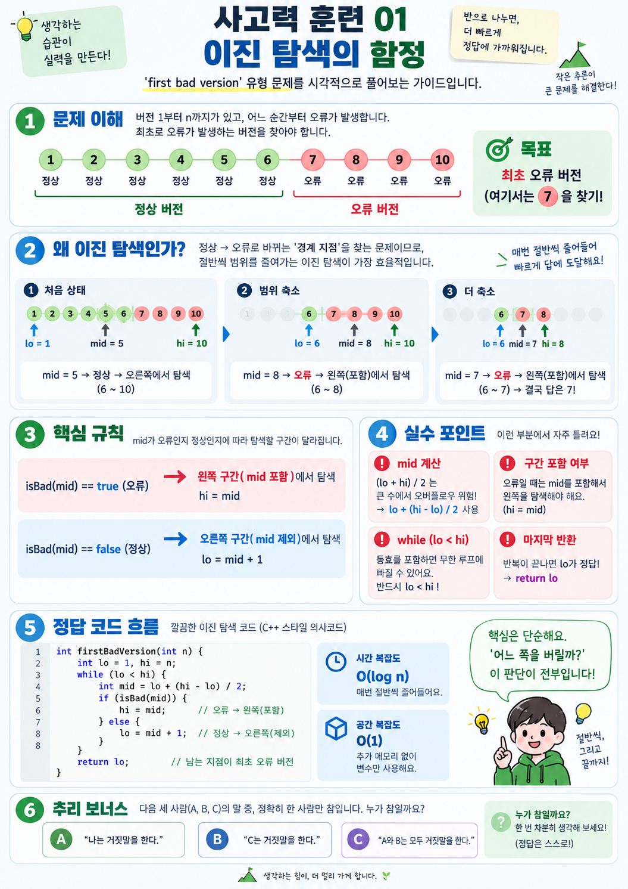

10개 중 가운데 버전 5를 검사해. 정상이면 1~5는 볼 필요가 없어.
사고력 훈련 01 — 이진 탐색의 함정
힌트는 단계별로 열고, 자신의 풀이를 먼저 생각한 뒤 해설을 확인하세요.
정답 보기 전에 1분만 생각해 봐
상황: 소프트웨어 버전이 1~10까지 있어. 1~6은 정상이고 7~10은 오류야.
질문: 1, 2, 3... 순서대로 하나씩 확인하지 않고, 최초 오류가 난 지점을 빨리 찾으려면 어디부터 확인해야 할까?
핵심은 정상 → 오류가 바뀌는 경계를 찾는 것이야.
남은 6~10에서 다시 가운데를 확인해. 오류라면 그 버전까지 왼쪽 후보에 남겨.
후보가 하나 남을 때까지 반복. 그래서 O(log n)에 찾을 수 있어.
🎨 그림으로 풀이 보기 (정답 포함)
그림에는 예시의 첫 오류 번호와 코드가 모두 표시돼 있어. 먼저 스스로 생각해 본 뒤 열어봐.

이 두 규칙만 알면 풀려
- mid가 오류일 때: 최초 오류가 mid일 수도 있으므로
hi = mid로 남겨. - mid가 정상일 때: mid까지는 정상이므로
lo = mid + 1로 제외해. - lo와 hi가 같아질 때: 후보가 단 하나 남은 거야. 그 번호가 최초 오류 버전이야.
한 줄 요약
“매번 중간을 검사하고, 정답이 없는 절반을 버린다.”
※ 그림의 마지막 예시에서 6~7로 좁혀진 뒤에도 버전 6을 확인하는 최종 단계가 필요해. 자세한 C++ 풀이에서 반복문의 경계 조건을 확인해 줘.
📘 자세한 기술 설명·코드·실습 펼치기
문제: 첫 번째 오류 위치
정렬된 버전 목록 1...n 중 어느 순간부터 모든 버전이 오류 상태로 바뀝니다. 즉, 정상 정상 정상 오류 오류 ... 순서입니다. 버전 k가 오류인지 확인하는 isBad(k) 함수만 호출할 수 있습니다.
목표: 최초로 오류가 발생한 버전을 가장 적은 호출 횟수로 찾아내세요.
예시: n=10, 최초 오류=7이라면 7을 반환합니다. 최소 하나의 오류 버전이 존재합니다.
힌트 1 · 선형 탐색보다 빠른 방법
정상/오류가 한 번만 전환된다는 단조성을 활용하세요. 중간 버전을 검사하면 답의 존재 범위를 절반으로 줄일 수 있습니다.
힌트 2 · 경계 조건
lo와 hi를 모두 후보로 포함시키고 lo < hi 동안 반복합니다. 오류라면 중간 지점도 답일 수 있습니다.
정답 및 C++ 해설
int FirstBad(int n) {
int lo = 1, hi = n;
while (lo < hi) {
int mid = lo + (hi - lo) / 2;
if (isBad(mid)) hi = mid;
else lo = mid + 1;
}
return lo;
}불변식: 첫 오류는 항상 [lo, hi] 안에 있습니다. 오류이면 [lo, mid], 정상이면 [mid+1, hi]에만 존재합니다. 시간 복잡도 O(log n), 공간 복잡도 O(1)입니다. 위 코드는 isBad가 외부에 정의된 문제 인터페이스를 가정합니다.
추리 확장 문제
세 개의 상자 A, B, C 중 하나에만 보물이 있습니다. 상자에는 각각 다음 문장이 쓰여 있습니다.
A: 보물은 B에 있다.
B: 보물은 여기에 없다.
C: 보물은 A에 없다.
세 문장 중 정확히 한 개만 참이라면 보물은 어디에 있을까요?
추리 문제 정답 보기
A 상자입니다. A에 있으면 A 문장은 거짓, B는 참, C는 거짓으로 참이 정확히 하나입니다. B에 있으면 A와 C가 참(2개), C에 있으면 B와 C가 참(2개)이므로 불가능합니다.
자기 점검
- 왜
mid = (lo + hi) / 2보다 차이 기반 계산을 권장할까요? - 모든 버전이 정상일 수도 있다면 반환 규약은 어떻게 바꾸어야 할까요?
- 세 상자의 문장 중 '정확히 둘만 참' 조건이라면 어떻게 달라질까요?